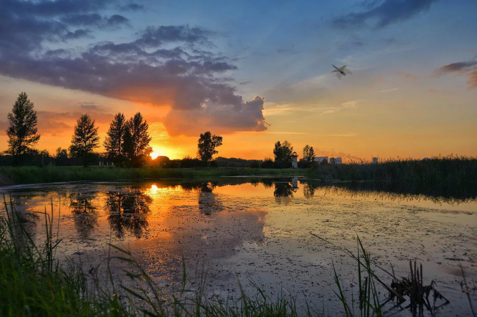

Заповедники Омской Области

Птичья гавань
Расстояние от Омска - 5,9 км
Время в пути - 12 мин
Стоимость билетов - бесплатно
Официальный сайт - http://ptichya-gavan.obiz.ru

Природный парк «Птичья гавань» — особо охраняемая природная территория в пойменной части левобережья Иртыша, расположившаяся в центральной части города Омска, с противоположной стороны Ленинградского проспекта от парка 30-летия Победы. «Птичья гавань» является одним из двух водных природных парков в мире (второй находится в Нью-Йорке) и единственным в России, который находится в черте большого города. Общая площадь парка по разным оценкам составляет от 110 до 170 гектаров (с учетом водоемов, находящихся на его территории).
В настоящее время «Птичья Гавань» — это уникальный уголок дикой природы в центре промышленного города и оригинальная естественная лаборатория по изучению биологии и экологии птиц. Кроме того, в последние годы парк все чаще становится площадкой для проведения различных мероприятий, например, День нефтяника и «Зеленый город Омск». На данный момент «Птичья гавань» наделана статусом объекта регионального значения и, по планам губернатора Омской области, должна стать визитной карточкой города.
В июле 2018 года в заповеднике «Птичья гавань» была открыта эколого-туристская тропа под названием «По следам пернатых». Вдоль тропы, проходящей по всей территории парка, были установлены информационные стенды с изображениями растений и срезами деревьев, растущих здесь, силуэтами птиц и слепками их лапок. Часть материалов, представленных на стендах, можно потрогать руками. На данный момент бесплатные экскурсии по тропе «По следам пернатых» проводятся Туристским информационным центром Омской области несколько раз в неделю. Попасть на нее может любой желающий, для этого необходимо лишь оставить предварительную заявку в Туристском центре.
Участники экскурсии смогут узнать, как и почему «Птичья гавань» стала особо охраняемой территорией, из каких стран сюда прилетают экзотические птицы и почему, а также какие птицы, занесенные в Красную книгу, живут в парке. Кроме того, в ходе экскурсии можно подняться на смотровую площадку 12-метрового маяка и посетить небольшой музей заповедника, где представлены коллекции насекомых, рисунки и картины с изображением птиц, чучела кудрявого пеликана, лебедя-шипуна и некоторых других пернатых.
Флора и фауна включает в себя 155 разновидностей птиц: наиболее распространенными являются утки и чайки (здесь обитают несколько их видов), кроме того, можно встретить куликов, серых журавлей, лебедей, а иногда и более редких гостей, таких как выпь и орлан белохвост, более 250 видов насекомых, 20 разновидностей млекопитающих, 3 вида рыб, 5 видов земноводных и пресмыкающихся и свыше 300 типов различных растений. В осенний период количество обитателей «Птичьей гавани» заметно увеличивается в связи с тем, что парк находится на одном из основных путей миграции птиц через Западную Сибирь к местам зимовок и к местам гнездования. Этот период является наиболее благоприятным для проведения различного рода исследований. Общее количество птиц, останавливающихся во время осенних перелетов на водоемах, близится к 3 тысячам особей.
Первые исследования с участием орнитологов в этой местности были проведены в 1970-е годы: тогда-то ученые и выяснили, что у берега Иртыша в межсезонье насчитывается около 150 видов пернатых, и примерно половина из них остается в регионе на гнездовье. Вследствие этих исследований, в 1979 году омским ученым А. Д. Сулимовым была обоснована уникальность этого природного объекта, месту дали название «Птичья гавань» и присвоили статус памятника природы областного значения. В 1991 году статус парка был повышен до природного парка регионального значения. Здесь стали проводиться открытые школьные уроки по экологии, экскурсионные занятия для студентов училищ и колледжей, летняя полевая практика студентов Омского педагогического университета.
Несмотря на столь долгую историю, работы по благоустройству парка начались лишь в 2007 году, до этого «Птичья гавань» не имела никакой инфраструктуры для приема посетителей. За 8 лет были проведены масштабные работы: расчищены озера, построена насосная станция, необходимая для поддержания уровня воды в водоемах, территория парка обнесена оградой, высажено более 200 саженцев (в числе которых саженцы ели, сосны, рябины, березы, липы, яблони, пирамидального тополя, сорбарии и клена). В 2015 году парк был официально открыт для посещения, несмотря на то, что многие планируемые проекты (по строительству досугового комплекса, гостиницы и ряда административных зданий) так и не были завершены.